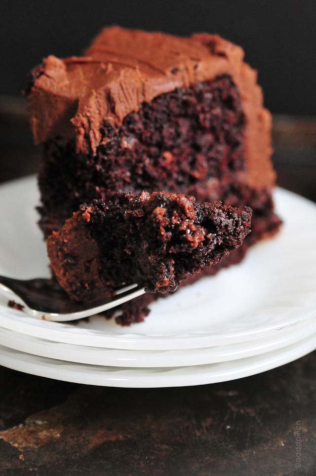

The best chocolate cake recipe ever!
| PREP TIME
| COOK TIME
| TOTAL TIME
|
| 15 mins |
30 mins |
45 mins |
Chocolate Cake with decadent chocolate frosting that will quickly become your favorite!
Author: Robyn Stone
Cuisine: Dessert
Serves: 12
INGREDIENTS
DIRECTIONS
Click on a direction to mark your place!
- Preheat oven to 350 degrees F. Prepare two 9-inch cake pans by spraying with baking spray or buttering and lightly flouring.
✔
- Add flour, sugar, cocoa, baking powder, baking soda, salt and espresso powder to a large bowl or the bowl of a stand mixer. Whisk through to combine or, using your paddle attachment, stir through flour mixture until combined well.
✔
- Add milk, vegetable oil, eggs, and vanilla to flour mixture and mix together on medium speed until well combined. Reduce speed and carefully add boiling water to the cake batter. Beat on high speed for about 1 minute to add air to the batter.
✔
- Distribute cake batter evenly between the two prepared cake pans. Bake for 30-35 minutes, until a toothpick or cake tester inserted in the center comes out clean.
✔
- Remove from the oven and allow to cool for about 10 minutes, remove from the pan and cool completely.
✔
- Frost cake with Chocolate Buttercream Frosting.
✔
Enjoy!
